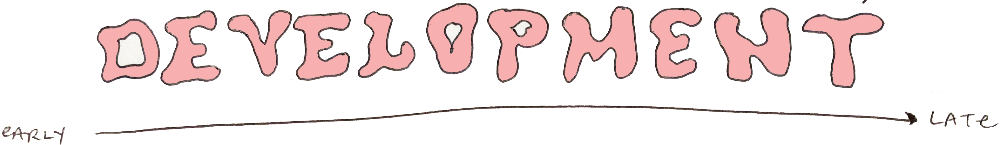

Leading games user research throughout development
I led the research initiative throughout this nearly 5-year project, pre-through-post production. I ran over 20 multi-day playtests, involving over 100 collaborators and more than 200 research participants. I owned the process from planning and conducting through analysis and presenting findings.
Creating a research roadmap
Developing processes, setting expectations, and building infrastructure were key aspects of keeping up with a rapidly changing product. Defining these elements of the research workflow early on set the project up for successful testing throughout development. The roadmap outlined types and cadence of research to be run, guidelines for stakeholder collaboration in the research process, and milestone goals to focus on as test objectives.
Secondary Research: I analyzed previous research to inform strategies for this project, including accessibility, our core fan base, and pitfalls of previous titles.
Data Analytics: I worked with data scientists to create a telemetry collection strategy. Streamlined naming conventions made keeping a navigable telemetry library easy to reference. The telemetry library grew throughout development as new features were added.
Stakeholder Management: I worked closely with design, engineering, production, and directors to continually assess research needs for the project. Each test included a framework document which outlined the content to be tested, the objectives to be covered, and the timeline for each test. I iterated insight delivery methods based on feedback from stakeholders on what was most helpful for them.
Mixed methods
This project evolved over time, and research approaches remapped accordingly. At the beginning stages, I focused on strategic planning and foundational work. Once we got moving I implemented more generative studies, and as the game took shape I did a lot of evaluative testing.
1:1 Interviews
In the early stages of the project I conducted interviews to see how players reacted to the overall tone of the content to help prioritize what to focus on or potentially cut. Beyond the discovery phase, interviews were used as supplementary to surveys taken in real-time. Players would complete surveys at specific intervals of their gameplay, I'd review their answers as they came in, then follow up with players to get more context.
Surveys
I used surveys in conjunction with other methods because they are low cost, high return, and offer both qualitative and quantitative data. I wanted players to be able to offer the feedback without pulling them out of the game experience too much. Surveys were designed according to the needs of each particular test. An example of survey cadence for an average test might look like this: Players complete an initial onboarding survey after the first few hours of gameplay. Players then complete a single survey multiple times over the course of the test, to assess a number of missions, to gather specific feedback in a timely manner, or to see how players learn over time. Finally, players complete a survey at the end of the test reflecting on the experience overall.
Progression Mapping
Case studies were helpful in presenting player experiences of specific content in game, particularly non-linear content which included some form of player choice. Journey maps or user case studies can be helpful when users have multiple options and take diverging paths. I mapped out the paths and sequences each player took through the open world, often revealing whether or not players understood critical information the game needed to convey. If a player encountered the tutorial material but did not continue the content, reviewing the flow gave us context as to whether they didn't understand the tutorial material or they were simply interested in engaging with other content. Designers were able to get a glimpse of each user's journey through this content step-by-step, along with survey answers and telemetry data which provided more context.
Card Sorting
The UX design team in charge of customization menu flows came to me wanting to know how users were navigating customization menus, if the choices were named intuitively and organized in a way that made sense. I decided to have research participants complete two card sorting tasks. I used a hybrid card sort method, allowing users to organize specific menu hierarchies we prioritized as most important, and add their own headings if desired. The tasks were done in-person using physical paper prototypes, before ever playing any of the game content.
Task 1- We asked players to take all the tier 2 menu items and group them into categories that made sense to them. They were allowed to make as many groupings as they wished. In this task, we found that players sorted some items differently than they appeared in game, and were able to use this data to adjust menus accordingly.
Task 2- We asked players to assign tier 3 items to tier 1 categories. In task 2, we saw that many players assigned tier 3 items to different categories than the game. This showed us that two of the tier 1 categories were conceptually similar, and players felt that some tier 3 items belonged to one rather than the other. After the card sort, players engaged with the customization in the game and offered feedback on the experience.
Players felt that the order of some categories was unintuitive, and some options were confusing or did not make the changes they expected. The combination of the card sort data and the post-use feedback allowed us to see the customization menus from the player perspective, and adjust based on their experience.
Eyetracking
Some test objectives lent themselves to using eyetracking as a measurement, such as assessing the visibility of signposting elements, seeing if players look at certain UI elements, or to assess understanding of mechanics (i.e. do players not understand this mechanic because it is confusing or do they not even know it exists because they miss the popup tutorial?) Eyetracking was used by default for all of the onsite playtests for this project, even if there were not specific objectives that required eyetracking. It often acted as a backup method for questions that arose during testing. For example, if during a test I saw that most players weren't using a specific mechanic, I could review the eyetracking videos to see if players were actually looking at the tutorial or item in question or if they missed it completely. Using time stamped GIF and video examples in reports was incredibly helpful in illustrating issues that involved visibility of certain elements. Interface messaging was one area that was helped greatly by eyetracking observations.
Example: I tested multiple iterations of an interface icon with multiple parts that messaged player health in combat. In one iteration, eyetracking data showed that players did not look at this element during combat. Combining this insight with survey data that assessed player understanding of the health system during combat confirmed that players were not aware of the value the element was messaging. In another iteration of the UI, we saw that player eye engagement was positive, however survey data showed that they didn't understand what the element was messaging, just that it was there. In the next iteration, players looked at the element when expected to, and survey data showed that due to the new design messaging, it was clear how the mechanic worked. Relaying the findings from eyetracking and surveys directly to designers and directors allowed the team to iterate on the design, re-test, and evaluate whether or not it worked until we came to a solution that solved both engagement and understanding. Better understanding of the combat system also resulted in higher satisfaction ratings!
Feedback Buttons

I wanted a way to gather in the moment feedback without being invasive and pulling players out of the game experience. My team adopted a method used by veteran games user researcher John Hopson (see his explanation here) The hardest part of this method is building the button mechanism. In practice, the buttons (or mapped keyboard keys) allow users to press a key associated with a specific sentiment quickly and in real time. I used both mapped keyboard keys and external hardware. Mapping keys is relatively easy, but I found that it could interfere with other keybinds programmed into the build in some cases. The external buttons were a better visual reminder to participants that they had the ability to input responses that way. Buttons were mapped in telemetry to timestamped videos for easy analysis. A quick check to see how often each button was pressed was a great way to begin the overall analysis to see if there were any clear frustration points. In the case that "frustrated" was pressed by multiple users at a specific moment, it was easy to focus on that area to see the context of what was frustrating players.
Reflection
Successes:
- I drew a flexible roadmap for how testing would look throughout the project.
- I maintained close working relationships with content creators to best serve their needs for the project.
- I iterated on how the results of each test were presented with the goal of providing stakeholders the most important information in the most digestible format.
- I adapted to project needs and provided content teams with actionable insights so they could make informed design decisions.
Key Takeaways:
- Expectation management and scoping are the keys to successful stakeholder collaboration. Learn to say no and prioritize. Maintain research integrity.
- When you consider everything a learning opportunity, you will never stop improving. Experiment with new methods, and focus on the facts when reporting results.
- Research like this should be iterative, just like design.
- Experimentation is valuable, but don't reinvent the wheel for every test. Keep a record of all past objectives and measurements, and reuse them wherever applicable! Designing solid scales and optimally worded question prompts that you can reuse will get you a long way in iterative testing.